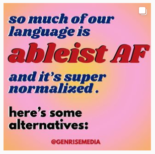
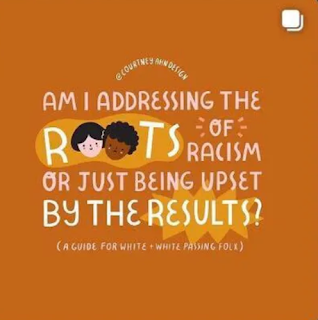
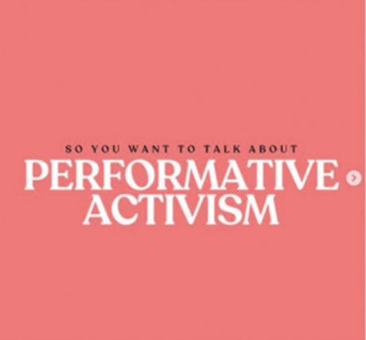

kill all men and ect was so stupid pls stop the social media activism slogans
Ok this one might be slightllyyy more serious. Just kidding. This is the internet. No-one is reasonable.
Let's start with this one.

Yeah... I don't know what this means, because I can't click on it and it's an image on Google. But hell no I'm not gonna read this or support your cause if your whole message relies on this 90s-looking-advertisement-powerpoint-presentation. NO THANK YOU.

Okay I don't know what this is about but how are you going to solve all of the world's problems with a couple of slides. Additionally, this is an ugly font, and it's all capitalised? Is this just a way for people to 'feel good' and 'like they're doing something useful for the world' with lying half-asleep on their sofa in their sad, deserted. delipidated, one-bed NO-- one room flat.
Trying to explain this
Also can I just take a second to actual read the contents of this image now?
ADDRESSING THE ROOTS OF RACISM. Okay cool.
BEING UPSET BY THE RESULTS. I think most people would be upset by racism.
A GUIDE FOR WHITE-- It's naive to think 'racism' only applies to 'white' or a certain group of people. Yeah seriously I know it's like HHAHAHAHAH white people HAHAHAH mayonnaise, but let's at least acknowledge doing that will help no-one in the end. Minorities sometimes are more racist to each other or themselves!! ( TRUST ME!! ).
WHITE-PASSING. I don't know what this means to be honest, but why does this make a difference? Are you saying anyone who looks 'white' should be subject to the same standards as 'white' people? Isn't that defeating the whole point of addressing racism? You're grouping people, even though their whole heritage could be different? There's not that many skin colours you know!!! THEY DONT OVERLAP!!!
FOLX. What is 'FOLX'? Is this some new animal? New american saying? No I'm serious. 'Folks' was already a very american ( and 'white' -- hmmm who wrote this...? ) word anyways...
What a great infographic ZERO / 10.

Ironic. You can't be this dense can you?
Let any guy boot up canva and this is what happens !!!
Social JUSTICE JUSTUICE JUSTICE remember when SJWs were disliked ???
THEY HAVE TAKEN OVER! It is my duty to balance out the world conversation, by being racist, and generally bigotory.
I do not ever want to get political on this blog, this is just some silly fun. Also no-one reads these pages anyways..... but...
I bet these people who preach these 'social-media-trendy-justice-topics" are just more racist and discriminatory than anyone.

WOAH!!! I NEED TO KNWO WHATS GOING ON IN TOMATO TOWN!!!!!
Well to end this off.
Why do you think the stereotype of the people who send these are 'teenage white girls'.....??
Ahhh THE WORST GROUP of people amirigh t am i right???